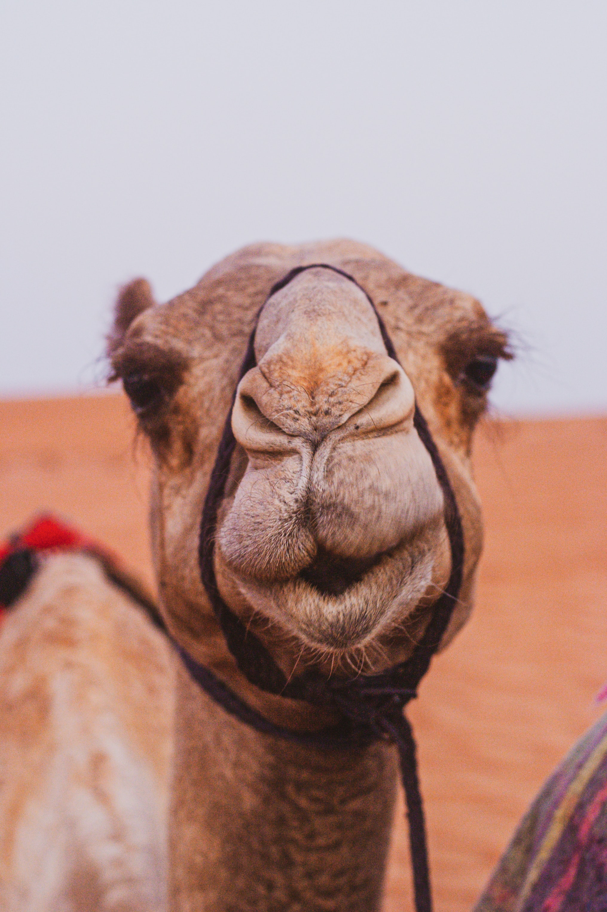

첼시 FC(영어: Chelsea Football Club, 첼시 축구단)은 잉글랜드 런던을 연고지로 하는 축구 클럽이다. 1905년에 창단했으며 현재 잉글리시 프리미어리그에 소속되어 있다. 더 블루스(The Blues)라는 별칭으로도 불린다. 구단 명칭은 런던 남서부 첼시 지역명을 사용하지만, 홈 구장은 첼시 인근 풀럼에 위치한 41,663명을 입장시킬 수 있는 규모의 스탬퍼드 브릿지이다.첼시는 프리미어리그 6회, FA컵 8회, 리그컵 5회, FA 커뮤니티 실드 4회, UEFA 컵위너스컵 2회의 우승 경력이 있으며, UEFA 챔피언스리그, UEFA 유로파리그, UEFA 슈퍼컵에서 각각 1회의 우승을 기록하였다. 또한 첼시는 UEFA 챔피언스리그에서 우승을 거둔 런던의 유일한 축구팀이며, UEFA가 주관하는 3개의 주요 대회에서 모두 우승을 거둔 4개의 구단 중 하나이다. 첼시의 홈 유니폼은 로열 블루 색상의 상·하의와 흰색의 양말로 구성되어 있다.(상대가 흰색 유니폼을 입을경우 양말은 로열 블루도 함께 입는다. 구단의 문양은 파란색을 바탕으로 하고 있으며, 현재의 문양은 2005년에 도안한 것이다. 2014-15시즌의 홈 평균 관중 수는 41,546명으로, 이는 프리미어리그에서 7번째에 해당한다. 첼시는 2003년 7월, 러시아 출신의 억만장자인 로만 아브라모비치에 인수되어 현재에 이르고 있다. 2016년, 포브스지의 조사에 의하면 첼시의 자산 가치는 약 16억 달러로, 이는 전 세계 축구 클럽 중 7위에 해당하는 수치이다. 현재 감독은 토마스 투헬이며, 주장은 아스필리쿠에타, 부주장은 조르지뉴다.
